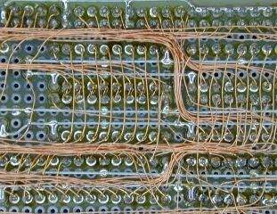

高密度配線もラクラク。基板に ICを隙間なく並べても配線スペースがなくなってしまうということはありません。その分基板代が浮いて自作セットの小型化にもつながります。→

←後ろすっきり。PTFE線ではスパゲッティ大盛りになってしまうような密度の配線でも、被覆の厚みがほとんど無いUEWではあまり盛り上がりません。
1997. 7. 14
ボードマイコンなどを自作るときは、ユニバーサルボードを利用するのがほとんどですが、その配線にはワイヤラッピングやそのラッピング線(PTFE線)を半田付け配線することが多いようですね｡しかし、PTFE線は次のような理由から半田付け配線する材料として向いているとはいえません。
90年代に入ってからは配線材料に UEWを使用する方法が普及してきました。UEWとはウレタン線のことで、インダクタや小型トランスの巻線に使われているのと同じ物です。この配線方法は、まだ少数派なのですけど、先に取り上げた欠点を全て克服していますので、ユニバーサルボードの半田付け配線としてはより理想に近い方法といえます。
で、実際に配線するは、ワイヤリングペンという配線ツールを使用します。この中に線を通して、先端から引き出しながら線を描くように配線するのです。ワイヤリングペンは基板といっしょに売っていますが、市販されているワイヤリングペンはチップが鈍くて使い難いものなので、気に入らなかったら極細ペンなどをバラして自作した方が良いでしょう。また、UEWはワイヤリングペンといっしょに売っているのは異様に高いので、そんなの買わずに、線材屋で目方売りしている(100gでも \1000以下)のを買った方がずっと得です。
使用する UEWの径はいろいろ試したところ φ0.2〜0.23程度がちょうど良いようです。この線を ICのリードに 3回程巻き付けながら線を描くように配線していくわけです。バス配線は一筆書きのように連続配線ができます。配線の最後は精密カッターで切断して1工程終わり。そして、ある程度配線が済むごとに半田付けして固定します｡ウレタン皮膜は熱に弱いのでそのまま半田付けするとそこだけ皮膜が溶けて容易に半田が乗るのです。このときこて先の温度はやや高温(400℃)にしておいた方がスムースにいきます。
高密度配線もラクラク。基板に ICを隙間なく並べても配線スペースがなくなってしまうということはありません。その分基板代が浮いて自作セットの小型化にもつながります。→
←後ろすっきり。PTFE線ではスパゲッティ大盛りになってしまうような密度の配線でも、被覆の厚みがほとんど無いUEWではあまり盛り上がりません。

ワイヤリングペン(自作)。後ろのホビンに UEWを巻いて、中を通して先端から引き出します。それと、ワイヤをカットする精密カッターと、ピンセットは必須アイテムです。
最初のうちは巻き付けながら一筆書き配線していましたが、ランダム回路の配線のように Point-to-Pointの配線ではそれがかえって面倒になってしまいますし、あとで回路変更するのも大変です。このため、最近は巻き付けずにPTFE線で半田配線するような方法がメインで、巻き付け配線は既にやっていなかったりします(^^;。UEWは切断面からは半田がすっと乗るので、切断・予備はんだしながらで、半田ごての温度も普通の温度（350℃）で十分です。
使う基板はスルーホール基板ばかりなので、ピンの足は面一で切断してしまいます。この方が余計な出っ張りがなくスムースに配線ができますし、足でワイヤの皮膜が傷つくことも防げます。ワイヤのカットには、ナイフと精密ニッパを場所に応じて使い分けています。

SOPやQFPのデバイスをユニバーサル基板に載せるには、ピッチ変換基板を使うのが普通です。でも、変換基板は高価ですし、実装面積が何倍にもなってしまい、スマートな方法とは言えません。そこで、ICを直接基板に載せて配線してしまう方法があります。ただ、そのままではランドでピンがショートしてしまうので、ポリイミド（カプトン）テープを貼って絶縁してからその上に載せてからピンに直接配線していきます。ポリイミドはフィルム基板などに使われる耐熱性の高い(連続200℃)素材で、半田付け程度の温度なら十分耐えます。ピンにワイヤを接続するには、ピンとワイヤの両方に予備半田しておいてから、ワイヤをこて先で押さえ付けるようにするとうまくいきます。(製作例)
ウレタン皮膜は薄く傷つきやすいので、その点に配慮しながら配線作業する必要があります。特にDIP ICの足など鋭い部分には、UEWが直接当たらないようにトレースすべきです。
電位差が10V以上あるような裸線と接触するときは、ポリイミドテープ等で絶縁しておくと安心です。
これも皮膜の薄さ故の問題点で、導体間が互いに接近する分線間容量が大きくなりやすいです。きっちり束ねたりしなければほとんど問題にはなりませんが、高速・高インピーダンス回路ではそれなりの配慮が必要です。
これは他の単線にも言えますが、常に振動が加わる環境では金属疲労で首から折れる危険があります。また、単線であるため導体に傷があるとそこに応力が集中して断線の危険が高まります。やむを得ずそのような環境に置く場合は、線が振動しないように高周波ワニスで固めてしまうと良いです。

{kind=link}